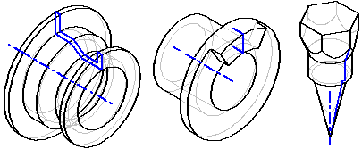
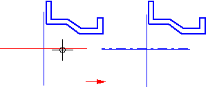
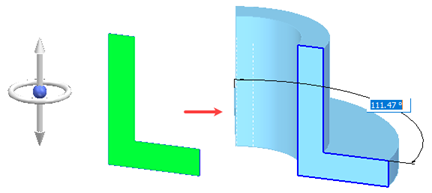
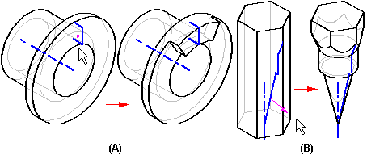
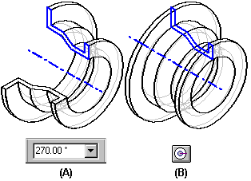
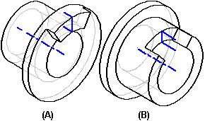

Constructing revolved synchronous features

When constructing a base feature using the Revolve command, you must use a closed sketch. When adding a revolved feature to a model, you can use open or closed sketches.
When drawing the sketch for a revolved feature, you also must define an axis of revolution. Each revolved feature can have only one revolution axis defined. You can select a sketch line or a reference plane using the Axis Definition option on the command bar. The revolution axis is displayed using a dashed line style.

You can also place the axis on a handle in a space point.

When using an open sketch to construct a revolved protrusion (A) or cutout (B), the Side Step allows you to define which side the material will be added to (A) or removed from (B).

The Extent Step allows you to specify how many degrees you want to revolve the feature. You can type a value in the Angle box (A) or you can click the Revolve 360 button (B) to automatically revolve the profile 360 degrees.

When constructing revolved features which have extent values that are less than 360 degrees, you can use the Symmetric Extent button to equally apply the extent value to both sides of the sketch plane.

How do I
Construct a revolved extrusion: base featureConstruct a revolved extrusion or cutout: subsequent features
Edit the radius of a face
Move a group of faces radially along a direction
Learn more
Constructing revolved features using the Select toolLook up more details
Revolve commandRevolve command bar
Revolved Protrusion command bar
Radiate command
Radiate command bar